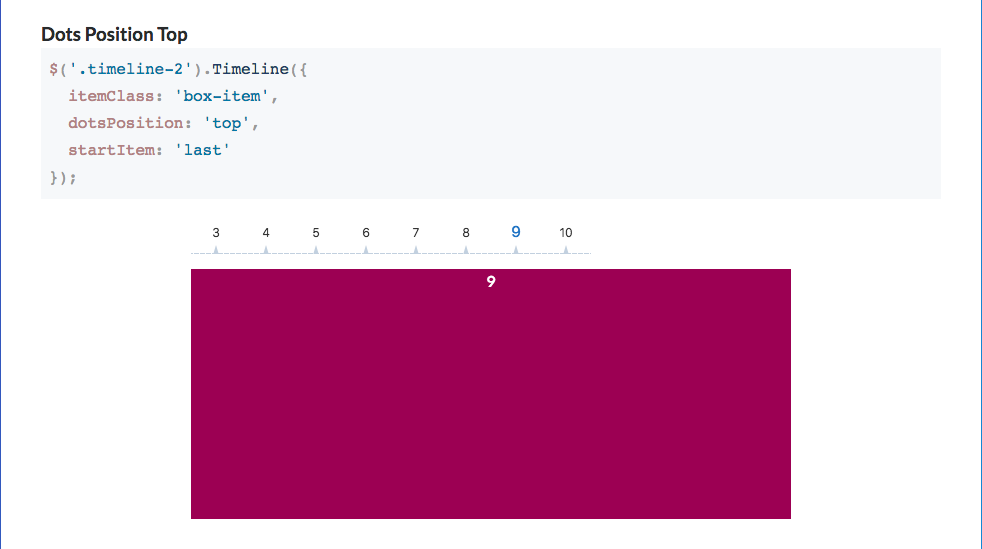

Max Symuleski is a PhD Candidate in Computational Media Arts and Cultures, Duke University, and currently the Instructor for ISS 241 / VMS 257: Web Project Design and Development.
You can find all of the demos for that class here.
I'll also be updating this website with example CSS, HTML, and JavaScript. You can CTRL/Right -> Click any page and inspect or view page source to find this markup and use it in your own work.
ISS 241 // VMS 257 : Assignments
ISS 241 // VMS 257 : In-Class Demos
ISS 241 // VMS 257 : Class Blog
JS Plugin Research: Timeline.js
In my JS plugin research I found a JQuery-dependent plugin called timeline.js. (the downloads and extended docs are here) Timeline js essentially helps you create an image slider, with the navigation tied to a clickable and hoverable menu. The javascript works by hooking to the data-time attribute of the div elements that are children of the "timeline js-timeline" classed div, and contain the content for each point on the "timeline". You can make the "data-time" attribute any string you like and it will be injected as the text content of the menu. It also has functionality to make the navigation clickable or hoverable.
I plan to use this plugin to create a one-page style section of my website with panels of content. I'll make the timeline content element itself fit to the viewport, so that it takes up the whole screen. With the timeline.js animation effects the tranistion between these panels will appear smooth and visitors can navigate my site from a clickable menu.
I also found a few great plugin lists: 20 Brilliant JQuery Plugins, Design Modo's best free js plugins 2018, and 30 cool plugins and effects for web developers. And this awesome "invert scroll" plugin that can basically help you make a totally horizontal scrolling website with tons of other cool effects.
Next Steps With JS and Web Development
Thanks for a great semester learning JavaScript for creative applications! I hope you got a lot out of it and will continue with writing code for fun and/or for the web.
We only covered some introductory material in JavaScript, which in the past several years has become a ubiquitous language for web media.
Here are some links to information and tutorials that can provide you with next steps, now that you have some experience with JavaScript, CSS, HTML and app development.
I highly encourage you to take advantage of the Lynda Subscription that comes with your enrollment while you're here at Duke. Lynda can even provide certification that you have taken the courses you have watched. You can find tutorials on programming languages, software, specific libraries and frameworks, database structures and langauges, etc. etc.
- Front-End Frameworks:
If you're interested in user-interface design, there are several JavaScript frameworks built specifically for writing front-end user-interfaces:
- Server Scripting Beyond Node
There are also much more apt web langauges for scripting server-side.
- PHP is a server-side scripting langauge. It was built originally to handle updating personal web pages (PHP: "personal home page" or, lately "hypertext pre-processor") without having to rely on constantly re-writing HTML code. Though it is not as popular as it once was, it is still used widely and is the backbone of Wordpress. Learning PHP for Wordpress Theme Development is a great introduction to the language and SQL database queries with PHP. I recommend the Lynda Course Building Wordpress Themes from Scratch Using Underscores, which walks you through the build of a complete custom Wordpress Blog theme with the Underscores HTML and CSS framework.
Ruby has also gained a lot of popularity in recent years for Web Application Development. It is the basis for the Development Framework Ruby on Rails. Ruby is easy to learn, has simple syntax, and the "large, friendly community" that they advertise totally checks out. Lynda.com has a Ruby on Rails Essential Training Course. It is good.
- Databases:
We looked at Heroku and Node for supporting web apps that make server requests, but if you really want to create an app with persistent, structured data on the web you'll have to use databases. There are a million options for these, and langauges to query them.
- SQL or "structured query language" is probably one of the most ubiquitous and popular database query langauges
- And MySQL is a highly popular database management system. And you can write SQL to query your MySQL Database.
- If you want to do anything with PHP, SQL and MySQL, you'll also have to work with a MAMP (or similar) stack: a server and database instance on your machine for local development.
- Postgresql is another very popular open source database managment system. Here is a good tutorial on Medium.com on using Postgres to add a database to a Heroku/Node.js app. It should be approachable after working through the node/heroku tutorial from this class.
- John Tucker at Codeburst has also written a great tutorial on Heroku/Node that includes database creation as its last step.